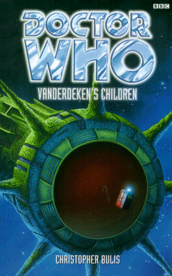

|
Vanderdeken's Children
|
BASIC PLOT DOCTOR COMPANIONS MATERIALISATION CIRCUIT Pg 11 The hold of the Cirrandaria, same time period. Pg 256 Back in the Cirrandaria hold, 3123AD again, having travelled twenty years into the future via shuttle. Pg 275 Closer to Emindar by several light years, 3124AD. Pg 278 On the Cirrandaria above Emindar, a few years after 4123AD or thereabouts. PREPARATORY READING CONTINUITY REFERENCES "The chamber's edges were dimly lit by assorted candelabra, torches and oil lamps, which Sam noted did not seem to burn down or need refilling quite as often as they should." This is reminiscent of the Doctor's everlasting matches, first seen in Doctor Who in an exciting adventure with the Daleks. Pg 5 "'Well, have you got any spacesuits with flight packs on board? We could buzz over and take a closer look while we pass it.' 'Possibly... somewhere,' the Doctor said absently." He may be referring to the suits we see in Four to Doomsday, but he may have others. Pg 14 "The Doctor opened it to reveal a plan of the ship. Scanning it intently, he strode out of the library, turned sharply left and disappeared down the corridor. A moment later he reappeared heading in the opposite direction, followed by Sam, who was trying to keep a straight face." This keeps happening to the Doctor, most recently in Army of Ghosts. Pg 17 "Meanwhile, mouth shut and ears open." The Doctor claims this as his method of learning in The Tomb of the Cybermen. Pg 19 "Sam gasped theatrically. 'You mean you've got a premonition of impending doom? Deja vu and stuff like that?' 'If you like.'" This is almost a reversal of a scene from The Robots of Death, where the Doctor doubts Leela's ability to sense that something bad is going to happen. Since, on that occasion, something bad does happen almost immediately, he's probably learned better since then. Pg 20 "Sam felt a pang of jealousy, which she tried with only partial success to smother. Chiding herself for raking over old bones, she looked away." The only mention, thank the Deity, in the entire novel of Sam's old crush on the Doctor from Longest Day etc. Pg 47 "'You're actually going to hit them with your real name?' Sam said, a mischievous glint in her eyes, as they stepped into the lift. The Doctor occasionally went under the transparent pseudonym of John Smith, but Sam had discovered that his real name was something quite alien and virtually unpronounceable." John Smith goes back to The Wheel in Space. We almost heard the Doctor's full name in The Trial of a Time Lord, but we didn't. It's interesting that, upon looking at it, Sam knows that it's his real name without being told. Pg 61 "Bless her creaking launch ramps" isn't continuity, but has to qualify as one of the all-time worst lines in Doctor Who, right up there on a par with 'And may my bones rot for obeying them' in The Twin Dilemma. Pgs 91-92 "The reversal has effectively wiped her memories. She cannot know at ten what she wouldn't learn until she was twenty-one." This contradicts what happens to Tegan and Nyssa in Mawdryn Undead when they get younger, but, if such a circumstance were to happen, what happens here would be more likely. Pgs 115-116 "Sam saw the spines begin to tear into the fabric of his suit. Instinct overcoming her reluctance to use guns, she snatched up his pistol and fired at the spines at point-blank range." Sam also used a gun in Placebo Effect, but had no conscience-pricking moments when shooting at the Wirrrn. Pg 129 "I consider myself primarily a citizen of the galaxy." Similar to what the Doctor said in The Daleks' Masterplan ('I am a citizen of the universe, sir, and a gentleman to boot.') Pg 151 "It was the sort of place, Sam thought, that you might expect to find a badly stitched together body lurking under white sheets. Come to think of, his appearance and period costume..." This is the TARDIS lab, and Sam goes on to refer to the Doctor as 'Doctor Frankenstein', both things being reminiscent of the Doctor's regeneration scene in the Telemovie. Pg 196 "She was on the Dreamstone Moon." Dreamstone Moon. Pg 204 "The Doctor was bent over the controls, holding them on course. Bendix had an impression of clenched teeth, pale skin beaded with sweat and blue eyes colder than any glaciers and sparkling with more determination than he had ever seen before." Not strictly continuity, but a reminder that this is the Doctor that we use to read about before the EDAs began. And it's glorious to have him back, even if only for a very short while. Pg 231 "Free will may be where it all began in the first place." Echoes of Inferno. Pg 238 "'My brother!' Chen shouted back. 'I know he's on the Starfire, but he's also here right now. I swear it! And he's only got one arm!'" How interesting, in this tale of time, paradox and destruction, that someone keeps seeing images of a family relation who has somehow lost an arm. Think The Ancestor Cell and then wonder how far back this went. Pg 250 "Paradox is just a word. It's an admission of ignorance. I only care if it works!" The Eighth Doctor's life appears to be all about paradoxes, no matter where he goes. I suspect the Faction. See Interference part II. Pg 256 "'You understand we have arrived here at the same time as if we had travelled back through the hyperspatial tunnel in the shuttle,' the Doctor was telling Vega. 'Any earlier and we risk breaking one of the prime laws of time.'" This sounds like a fudge in order to keep the action moving at a constant rate, but it is, at least, totally consistent with everything else the Doctor has said about the problems that the derelict is causing to the Vortex. Normally I'd object, but on this occasion, it works. Pg 267 "'Double occupancy of the same part of space-time...' He clapped his hands together violently as if by way of demonstration." When in doubt, blame Blinovitch. Day of the Daleks. OLD FRIENDS AND OLD ENEMIES NEW FRIENDS AND NEW ENEMIES Captain Coryn Lanchard. Commander Thom Vega. First Officer Lorren Bendix. Engineering Chief Nel Manders. Lieutenant Alan Jenez. Dessel. Oscar Casillo, Chief Purser. Ship's surgeon, Dr Gilliam. Daniel and Jeni Engers and their son, Dan Jr. Rexton [full name: J Kale Rexton, HC (High Councillor)] also survives, kind of, given that he is caught in a time-loop, constantly appearing on Emindar as a child, growing up, getting caught up in the events surrounding the derelict and eventually causing himself to be thrown back in time, de-aged and appearing on Emindar. He's never going to stop. When you think about it, this isn't very nice. Captain Sargro of the Hermes of Cyrene also survives, along with the 200 or so Federation passengers that he takes from the Cirrandaria.
CONTINUITY COCK-UPS PLUGGING THE HOLES [Fan-wank theorizing of how to fix continuity cock-ups] FEATURED ALIEN RACES Tritonites are pseudo-crocodilian, with tails, and are amphibious. Not, strictly speaking, aliens, but the 'ghosts' of the Cirrandaria crew are translucent and drain energy from living beings to survive. They function a little like the ectoplasm in the Ghostbuster's films, becoming more and less solid and being able to reform as a fluid would. FEATURED LOCATIONS Pg 8 The Cirrandaria. Pg 23 The Indomitable. Pg 61 The shuttle Doria. Pg 67 The shuttle Resolve. Pg 77 On the Derelict. Pg 205 The Em Minor Spaceport [sounds like a guitar chord], which appears to be on a moon of Emindar, circa 3143 ('a little over twenty years in the future' (page 223)). Pg 275 Deep space again, but closer to Emindar, 3124AD. Pg 278 On the Cirrandaria above Emindar, a few years after 4123AD or thereabouts. Pg 281 Melconville, North Berron, Emindar, 17-18 Junis, 3072. IN SUMMARY - Anthony Wilson |
|
 |